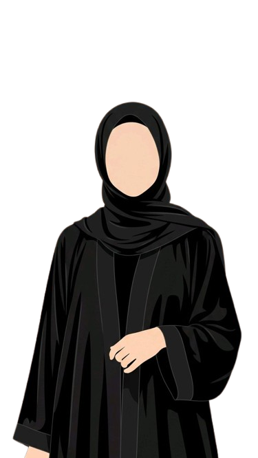

Completed a 5-year Islamic course from Vadinoor SNEC Women’s College, Vanimel.
Completed my Higher Secondary education from
MKHMMO Higher Secondary School for Girls, Mukkam.
Currently pursuing my degree through distance education from Sreenarayanaguru Open University (SGOU).
Creativity – Developing creative ideas, thinking differently,
and finding new
and interesting ways to approach different tasks and challenges.
Writing – Expressing thoughts,
ideas, and information clearly and effectively through well-organized and engaging written content.
Graphic Design – Creating visually appealing and meaningful designs by combining creativity, layout,
typography, and visual elements effectively.
Reading – Exploring different books and gaining new ideas, knowledge,and perspectives
through reading.
Writing – Expressing thoughts, ideas, and creativity through writing in an interesting
and
meaningful
way.
Designing – Creating creative and visually appealing designs by experimenting
with different ideas
and
visual elements.